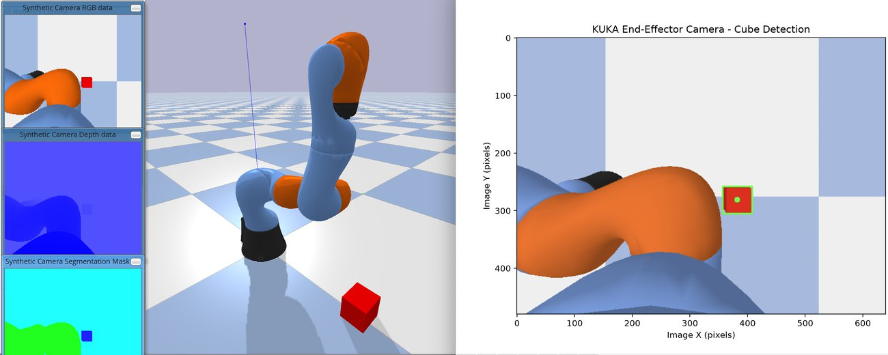
For my Robot Perception midterm at Cornell, I modeled a virtual RGB pinhole camera mounted on the end effector of a seven-joint KUKA iiwa arm in PyBullet, loading the robot from its URDF. I then tested how image measurements depend on camera pose, field of view, target size, and occlusion.
Each test compared two independent estimates of where a red cube appears in the image: a mathematical prediction that projects the cube's known 3D position through the camera model, and an OpenCV measurement taken directly from the rendered pixels. The two agreed to within 2.91 pixels in the baseline case on a 640 × 480 image. This validates the geometric model in simulation; it is not a physical-camera calibration, and it does not model image noise or lens distortion.
Mathematical Modeling
- World to camera frame
- qC = RWCT (xT − xC)
- Pinhole projection to pixels
- û = cx − f qx / qz, v̂ = cy − f qy / qz
- Field of view to focal length
- f = H / (2 tan(θ / 2))
- Sensitivity to lateral motion
- ∂û / ∂qx = −f / qz
- Sensitivity to camera tilt
- dû / dα = f [1 + (qx / qz)2]
- Apparent target size
- wpx ≈ f L / qz
- Pixel error
- epx = √[(uobs − û)2 + (vobs − v̂)2]
Technical Methods
- Robot setup: loaded the fixed-base arm from its KUKA URDF and solved inverse kinematics for the end-effector pose (0.00886 mm position error)
- Coordinate transforms: carried the camera mounting offset and tilt through rotation matrices from the end-effector frame to the camera frame
- Image measurement: HSV color thresholding, largest-contour selection, and bounding-box centers in OpenCV
- Controlled experiments: varied one parameter at a time across camera translation, field of view, tilt, cube size, and line of sight
- Error analysis: compared predicted and measured pixel locations, displacements, and size ratios
Key Results
- Baseline: predicted (380, 280) px vs. measured (382.5, 281.5) px, a 2.91 px error
- Translation: moving the camera about 0.10 m shifted the cube 48 px in both model and measurement, matching the predicted 480 px/m sensitivity at 0.50 m depth
- Tilt (0° to 20°): 102.11 px predicted vs. 104.5 px measured horizontal shift
- Field of view (50° to 110°): detected cube width fell from 108 px to 36 px
- Target size (4 to 10 cm): image width ratio of 2.55 vs. a physical size ratio of 2.50
- Occlusion: a blocked cube went undetected even though its center still projected inside the field of view, showing that being in the field of view does not guarantee visibility
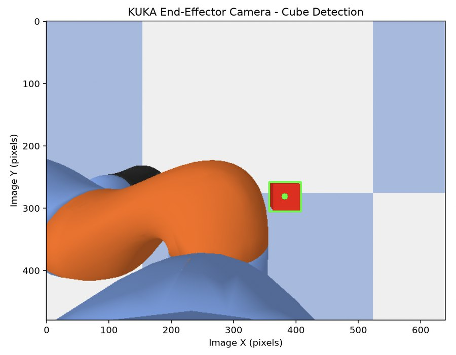
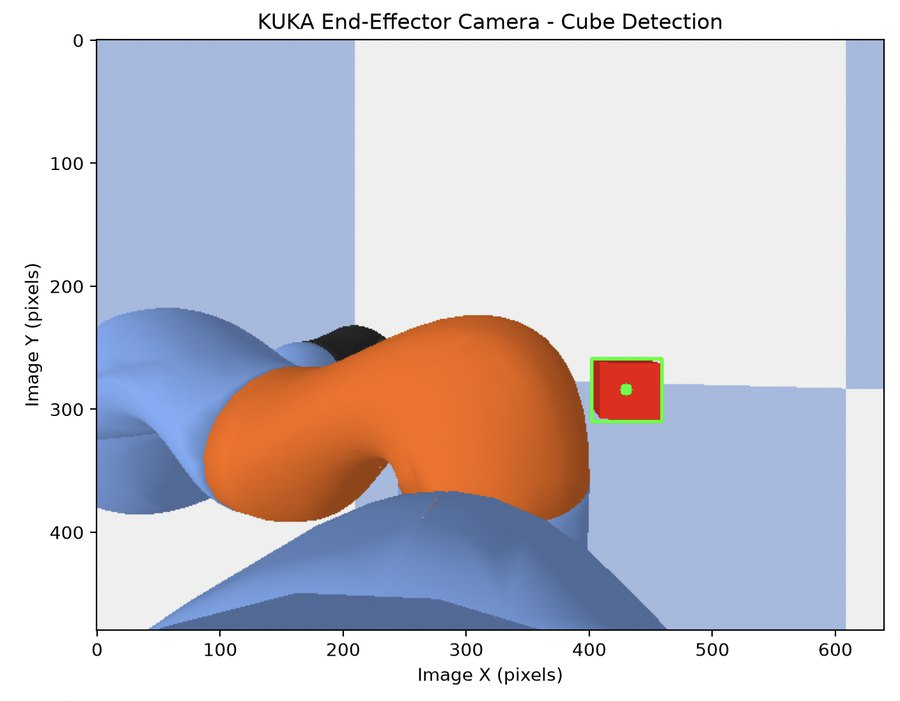
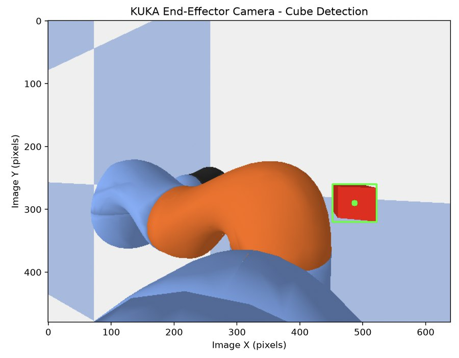
Camera tilt of 0°, 10°, and 20°. Only the tilt changes; the camera center and cube position stay fixed.
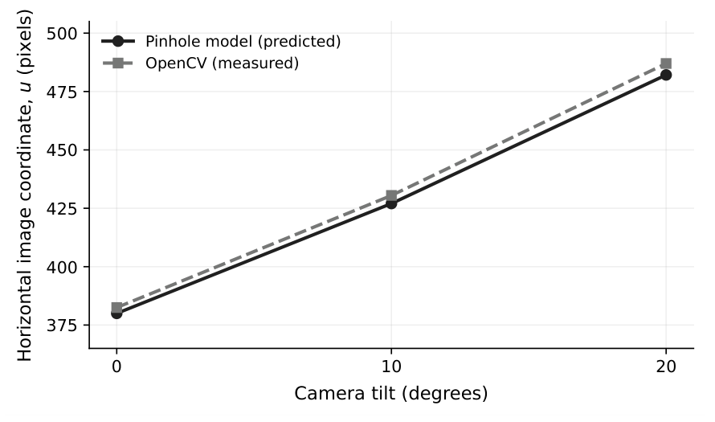
Predicted and OpenCV-measured horizontal position across camera tilt.
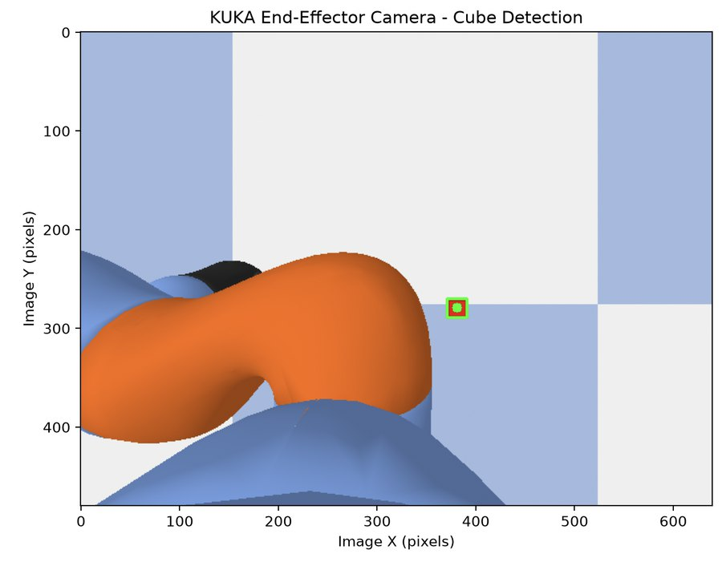
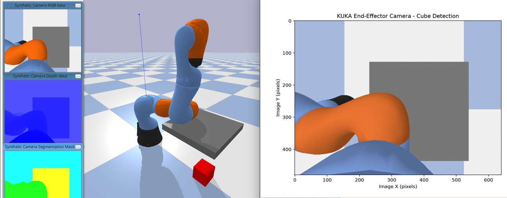
Link
For this course project, we are developing a forearm-worn skin-stretch device to help surgeons and surgical trainees distinguish soft tissue from stiff structures, such as gallstones, during minimally invasive gallbladder surgery. Force sensors on the jaws of laparoscopic forceps will measure grasping force, and a tactor on the forearm will stretch the skin in proportion to that force, keeping the hand free to operate.
In laparoscopic surgery, trocar friction, abdominal wall elasticity, and the fulcrum effect all distort the forces a surgeon feels. Earlier forearm skin-stretch work raised stiffness identification from 50% to 73% and cut peak force by 36%, but with a palpation probe (Saudrais et al., 2025). Our project extends the approach to grasping, using the forceps surgeons rely on to hold and retract the gallbladder.
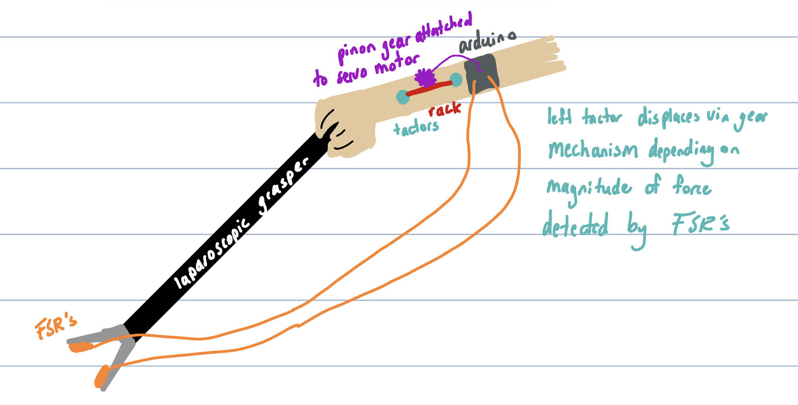
Concept sketch: force-sensitive resistors on the grasper jaws signal an Arduino, which drives a servo and rack-and-pinion to displace a forearm tactor.
Planned Validation
Five users will rank three objects of different stiffness that they cannot see, using a standard laparoscopic grasper and our haptic grasper. We will compare how accurately they identify stiffness with each one.
Project Plan
- Finalize components, order materials, and complete the initial CAD
- Assemble the rack-and-pinion mechanism and validate the force sensors
- Find the force-displacement relationship and integrate the system
- Run the user study and collect data
- Finalize the setup for the demo
Skills I Will Build
- Haptic device design: a wearable, servo-driven rack-and-pinion skin-stretch mechanism
- Sensor integration: instrumenting forceps jaws with force-sensitive resistors and validating their signals
- Embedded control: mapping force readings to servo motion on an Arduino in real time
- System characterization: relating grasping force, object stiffness, and tactor displacement
- Human-centered evaluation: designing a user study around perception of stiffness
Manufacturing Design Engineer Intern
Path Robotics · Columbus, OH · Summer 2026 – Present (remote, Fall 2026)
Spent Summer 2026 as a Manufacturing Design Engineer Intern at Path Robotics, a startup building physical AI for autonomous robotic welding. Working directly on the floor, I operated and troubleshot Yaskawa robots and helped develop AI-powered floor automation tools alongside engineers and scientists pushing the boundaries of physical AI. The startup environment was intense, exciting, and constantly changing.
Beyond the floor, I traveled to customer sites, contributed to project meetings, and saw firsthand how large-scale deployment projects are scoped and executed. The experience reinforced how important it is to keep user needs at the forefront of engineering design — building solutions that work for both the customer and the business. I sharpened my technical skills in robotic controls, CAD, and welding, and am continuing with Path as a remote intern through Fall 2026 while beginning graduate research at Cornell.
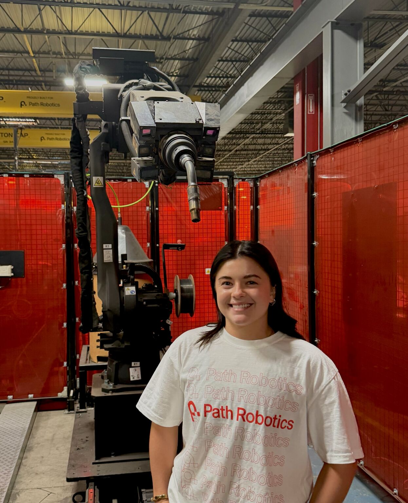
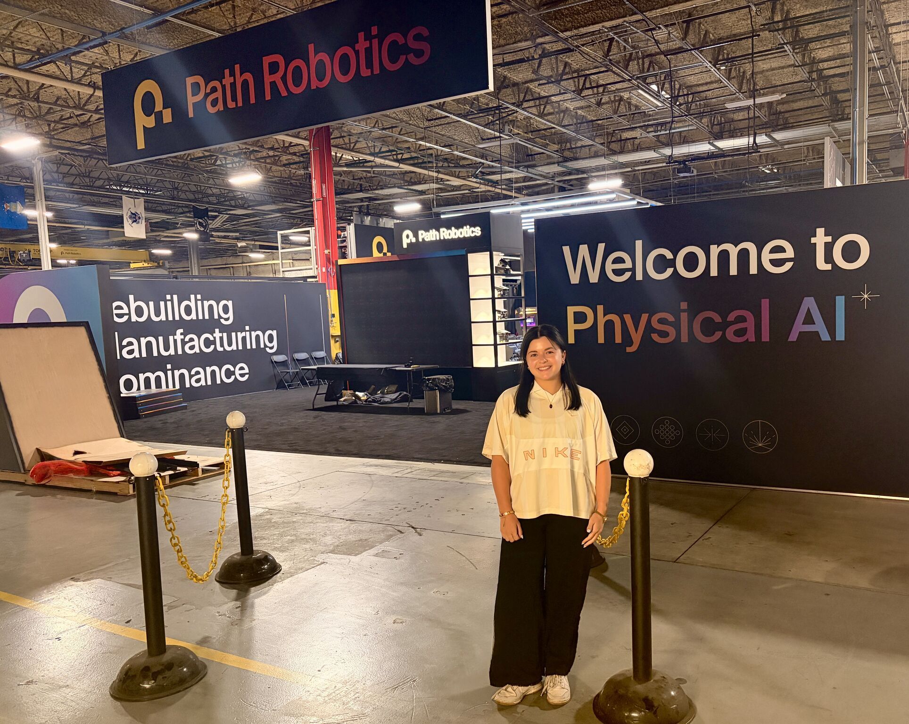
Highlights
- Operated and troubleshot Yaskawa robots on the production floor
- Developed AI-powered floor automation tools for robotic welding deployment
- Traveled to customer sites and contributed to large-scale deployment project meetings
- Continuing as a remote intern through Fall 2026
Mentors
Geoffrey Wylie & Alexandra Hagmeyer, Path Robotics.
Link
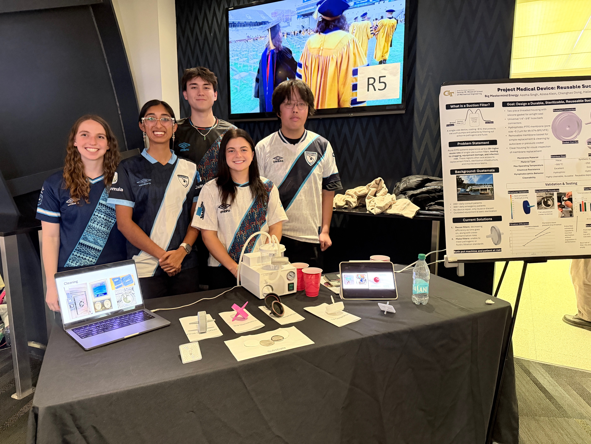
Led mechanical design and validation of a frugal, reusable in-line suction filter for operating rooms in resource-limited clinical settings, improving suction safety and reliability by 50%. Single-use filters are routinely reused in low-resource hospitals due to cost — our device provides a safe, sterilizable alternative where no cost-effective reusable solution previously existed.
We conducted material and mesh analysis, porosimeter testing, and Bacterial Filtration Efficiency (BFE) validation confirming performance across 30 sterilization cycles. I performed structural and fluid-structure simulations and maintained ISO 13485 design control documentation throughout.
CAD model of the reusable in-line suction filter assembly.
Real-time suction performance test of the prototype filter.
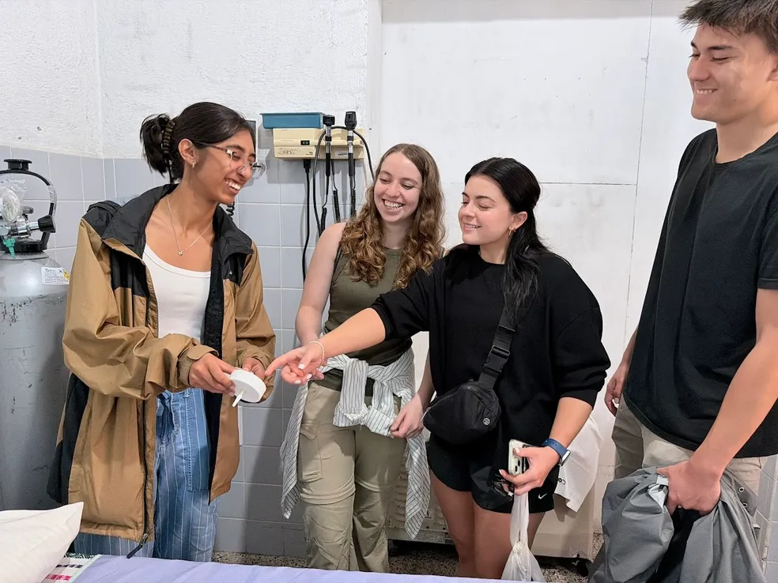
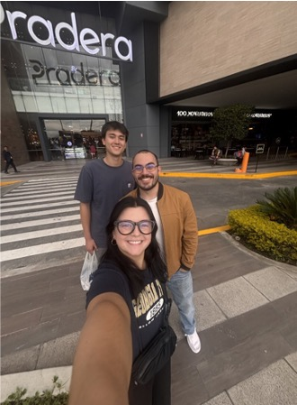
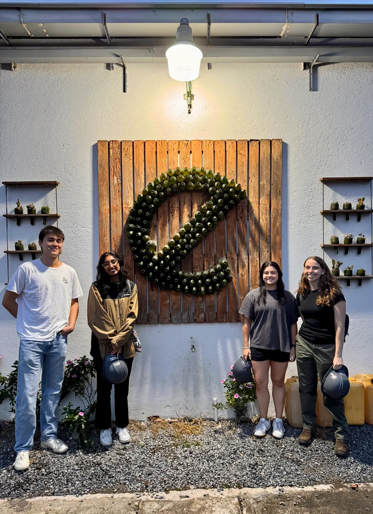
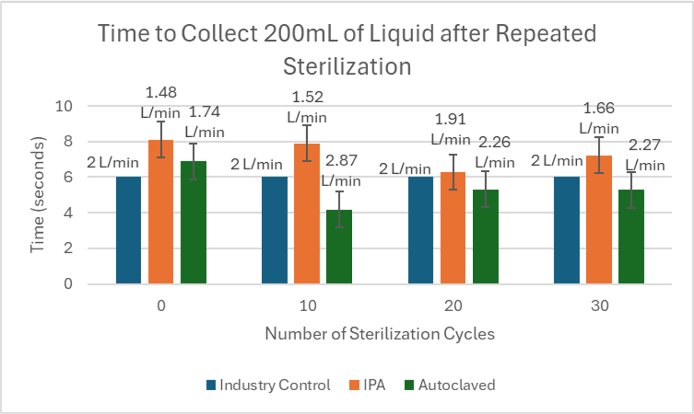
Key Outcomes
- 50% improvement in suction safety and reliability
- Validated across 30 sterilization cycles (IPA & autoclave)
- Funded by GT ME Department and Project Impact
- Collaborated with BME Engineers Without Borders & Ecofiltro (Guatemala)
- ISO 13485 design control documentation
Featured Coverage
Designed and prototyped a wearable ankle band for early detection of preeclampsia — a leading cause of maternal mortality, particularly affecting Black women in Georgia. The device uses a PPG sensor for continuous blood pressure monitoring and a flex sensor to quantify ankle edema, two key early indicators of preeclampsia.
The physical prototype integrates an Arduino Nano with sensors mounted on a cloth band for comfortable at-home use. A parallel computational prototype used Python image analysis of colorimetric urinalysis assays (Congo Red Dye and Tetrabromophenol Blue) to detect proteinuria — another preeclampsia biomarker. The project emphasized high-specificity design so any positive result would be confirmed by a medical professional.
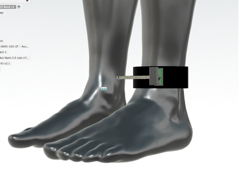
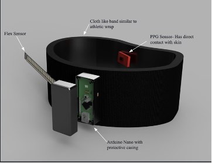
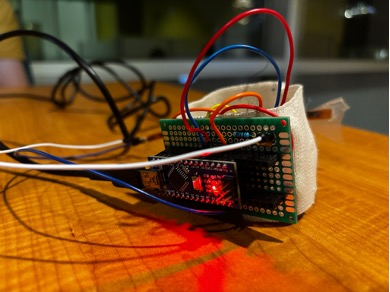
Key Outcomes
- Functional PPG-based blood pressure monitoring and flex-sensor edema detection
- Parallel computational prototype: Python image analysis of urinalysis assays
- High-specificity design for at-home use
- Addressed maternal health disparities in under-resourced Georgia communities
Designed and built a wearable lumbar sensor band to monitor lower back posture and movement. The device integrates embedded electronics into a flexible, form-fitting band worn at the lumbar region, enabling non-invasive tracking of spinal position and muscle activity throughout daily activity.
The CAD model was developed in Fusion 360, and the physical prototype was assembled and tested on a mannequin and team members. The project aimed to provide a low-cost, wearable solution for monitoring lumbar health outside of a clinical setting.
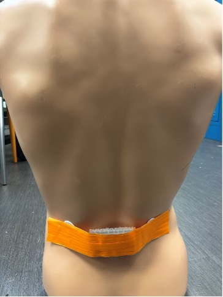
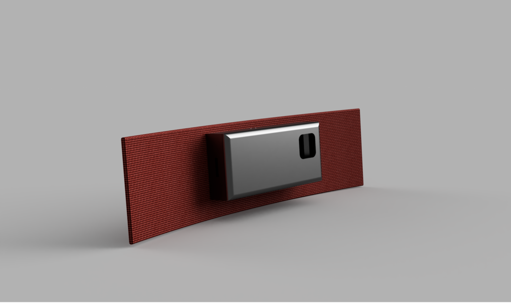
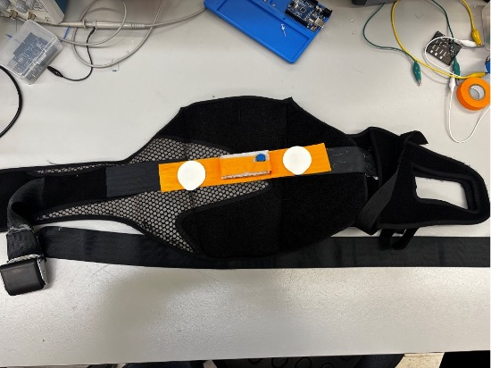
Key Outcomes
- Wearable form-factor designed for continuous at-home lumbar monitoring
- CAD modeled and iterated in Fusion 360 for fit and electronics integration
- Physical prototype assembled and tested on human subjects
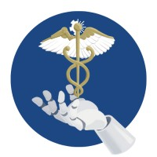
Vice President
Georgia Institute of Technology · 2023–2025
Served as Vice President of Georgia Tech's Medical Robotics Club — one of the largest student organizations in the College of Engineering with 200+ members. Organized technical workshops, career panels with industry professionals, and inter-team mentorship connecting undergraduates with graduate researchers and biomedical industry partners.
Coordinated the annual Project Showcase, where student teams presented semester-long engineering projects to faculty, alumni, and industry guests. Led executive board planning, recruitment events, and maintained partnerships with GT's BME and ME departments to provide members with research and internship opportunities.
Spent Spring 2025 at the Georgia Tech Shenzhen Institute (GTSI) as a U.S. Department of State Gilman Scholar with the Critical Need Language Award for Chinese. The semester included immersive coursework, language study, and cross-cultural research engagement across China and South Korea.
Visited Peking University (PKU) in Beijing to meet with Dr. Mengdi Han's lab, researching flexible bioelectronics and wearable biosensors — directly relevant to my interests in bio-inspired design and medical devices. Also visited Seoul National University (SNU) in South Korea to meet with Dr. Hyungmin Park's Bio-Fluid Mechanics Laboratory, exploring overlaps with my fluid dynamics research.
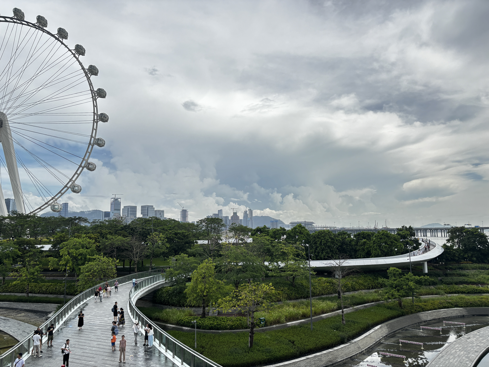
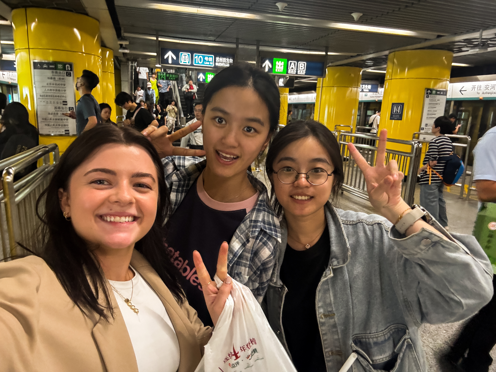
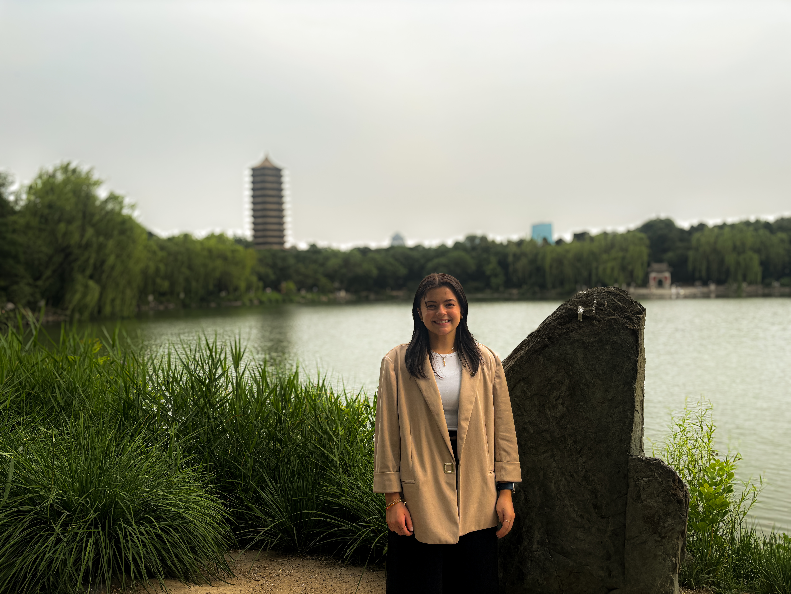
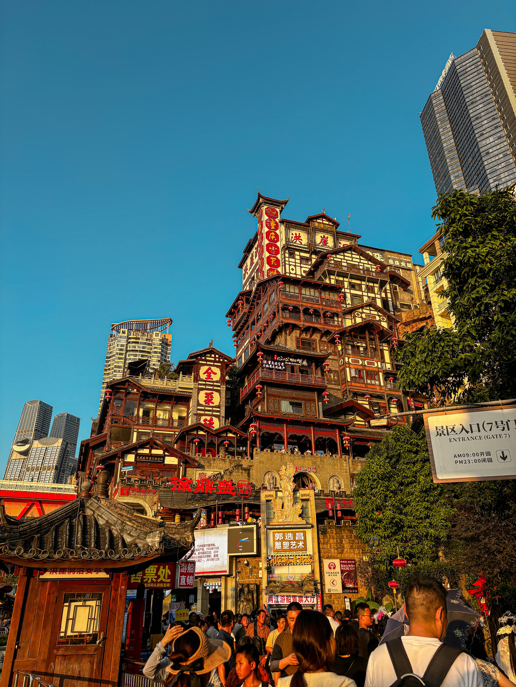
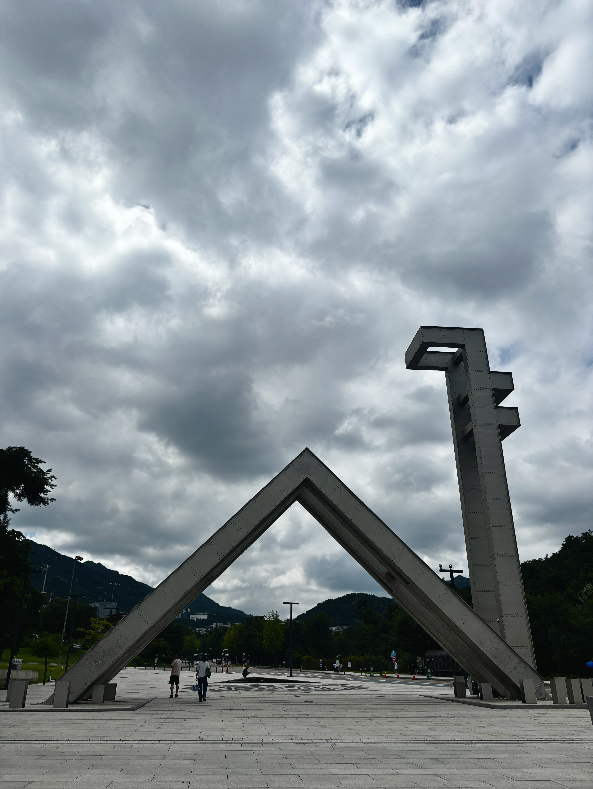
Shenzhen Bay · Beijing · Peking University · Shanghai · Chongqing · Chongqing Night · Zhangjiajie · Seoul · Seoul National University